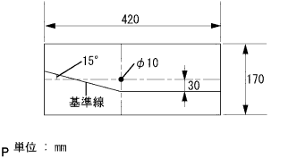

ヘッドランプASSY 取り付け |
| 1. ヘッドランプASSY LH取り付け |
 |
各コネクターを接続し、スクリュー4本でヘッドランプASSY LHを取り付ける。
| 2. フロントバンパ カバー取り付け |
フォグランプのコネクタを接続する。
 |
フロントバンパサイドのツメのかん合を合わせ、クリップ2個およびスクリュ6本ボルト2本でフロントバンパカバーを取り付ける。
スクリュ2本でフロントバンパサイドブラケットRHおよびLHを取り付ける。
| 3. フロントフェンダ ライナ RH取り付け |
スクリュ3本でフロントフェンダライナ RH(前部)を取り付ける。
| 4. フロントフェンダ ライナ LH取り付け |
図のようにクリップを押し込み、かん合させる。
スクリュ2本でフロントフェンダライナ LH(前部)を取り付ける。
| 5. ラジエータ グリル W/ラジエータ サポート シール UPR取り付け |
ラジエータ グリルとラジエータ サポート シール UPRを組み付ける。
 |
ラジエータグリル下部のツメを合わせ、クリップ6個でラジエータ グリル W/ラジエータ サポート シール UPRを取り付ける。
| 6. バッテリーマイナスターミナル接続 |
| 7. バッテリーターミナル脱着時の初期化 |
参照| 8. ヘッドランプ調整前作業 |
タイヤ空気圧を正確に調整する。
運転席に1名(55kg)乗車する。
エンジンを始動し、バッテリを充電状態にする。
燃料、オイル、水は満タンにする。
車両を上下に揺すり、サスペンションを正規状態に落ち着かせる。
 |
レベリングスイッチのダイヤルを0にする。(マニュアルレべリング車)
| 9. ヘッドランプ光軸調整(ロービーム テスター使用時) |
テスターとヘッドランプレンズの距離をテスターの規定値にする。
車両にテスターを正対させる。
 |
ヘッドランプテスターをセットする。
テスターの角度調整つまみを下方10ｃｍ、左右0ｃｍにする。
ヘッドランプの中心にテスターの集光レンズを合わせる。
他方のランプの光の影響を受けない処置をする。
ヘッドランプをロービームで点灯する。
使用するヘッドランプテスターの取扱説明書に基づき、ロービームの光軸を調整する。

| 10. ヘッドランプ光度点検(ロービームテスター使用時) |
光軸調整後ヘッドランプテスターで光度を点検する。
| 11. ヘッドランプ光軸調整(ロービーム スクリーン使用時) |
|  |
厚手の白紙を用意する。
 |
図の調整用スクリーンを作成する。
テスターとヘッドランプレンズの距離を3ｍにする。
車両にテスターを正対させる。
ヘッドランプテスターをセットする。
ヘッドランプ中心にテスターの集光レンズ中心を合わせる。
テスターの集光レンズ中心に調整用スクリーンの中心穴を合わせテープなどで貼り付ける。
他方のランプの光の影響を受けない処置をする。
ヘッドランプをロービームで点灯する。
基準線から大きくはずれる場合は、明暗分割線を基準線の位置に合うようにロービームの光軸を調整する。
| 12. ヘッドランプ光度点検(ロービーム·ハイビームテスター使用時) |
テスターとヘッドランプレンズの距離をテスターの規定値にする。
車両にテスターを正対させる。
 |
ヘッドランプテスターをセットする。
テスターの角度調整つまみを下方11ｃｍ、左方23ｃｍにする。
ヘッドランプの中心にテスターの集光レンズを合わせる。
他方のランプの光の影響を受けない処置をする。
ヘッドランプをロービームで点灯する。
光軸調整後ヘッドランプテスターで光度を点検する。
| 13. ヘッドランプ光軸調整(ハイビーム テスター使用時) |
テスターとヘッドランプレンズの距離をテスターの規定値にする。
車両にテスターを正対させる。
|
ヘッドランプテスターをセットする。
テスターの角度調整つまみを下方ヘッドランプ中心の高さ1/5ｃｍ、左右とも0ｃｍにする。(左側ヘッドランプ)
テスターの角度調整つまみを下方ヘッドランプ中心の高さ1/5ｃｍ、左方5ｃｍにする。(右側ヘッドランプ)
ヘッドランプ中心にテスターの集光レンズを合わせる。
他方のランプの光の影響を受けない処置をする。
ヘッドランプをハイビームで点灯する。
使用するヘッドランプテスターの取り扱い要領に基づき、ハイビームの光軸を調整する。
| 14. ヘッドランプ光度点検(ハイビームテスター使用時) |
光軸調整後ヘッドランプテスターで光度を点検する。